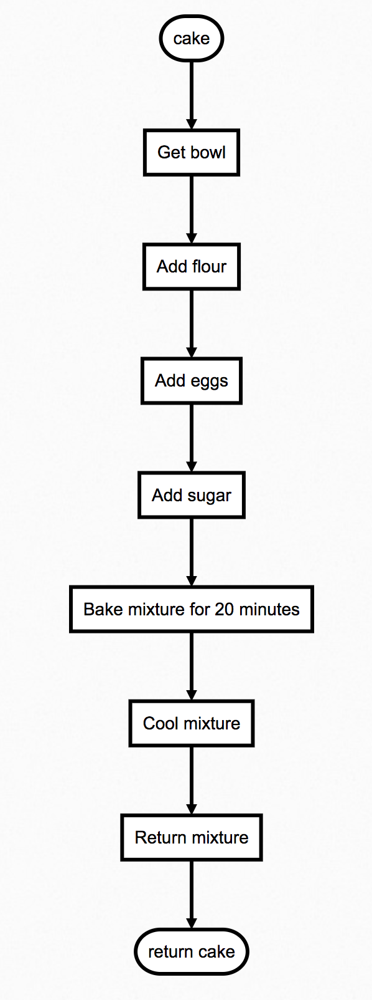
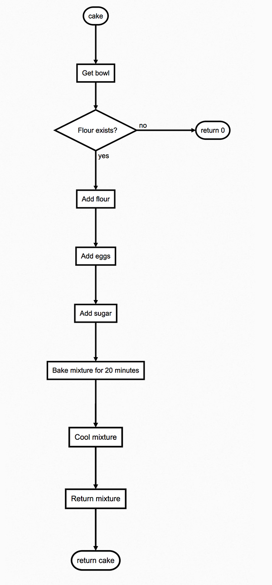
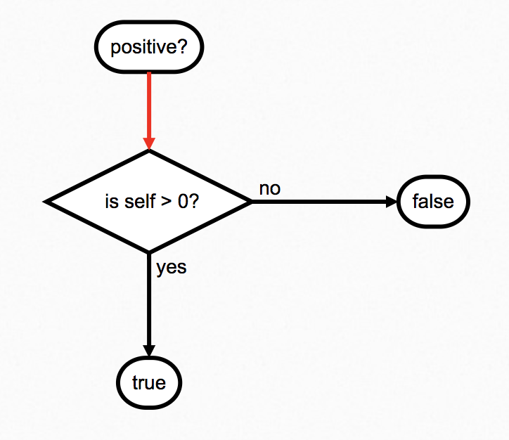
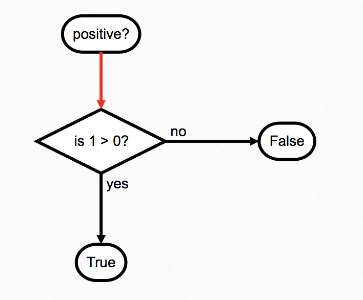
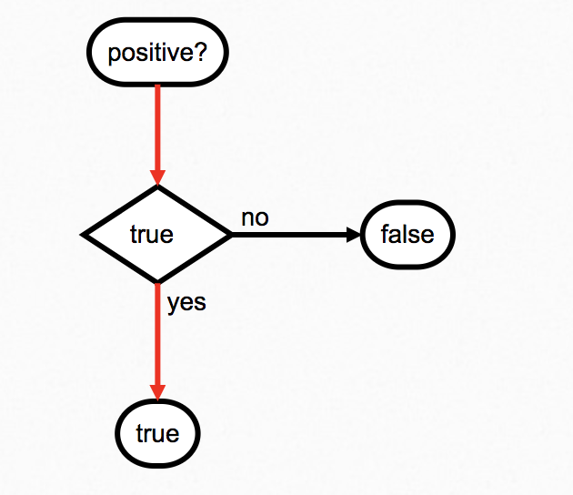
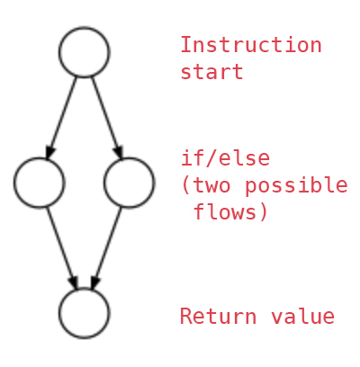
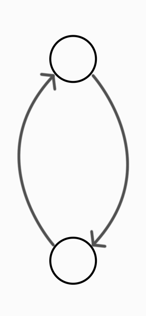

Flow of Control
We already know that when we start a Ruby program, some objects are made for us.

In module 2, we saw that integer objects were ready and waiting for us whenever we set up the Ruby world. And, we assigned these pre-existent numbers to variables: in other words, we gave them programmer-friendly names.
In module 3, we found out that we could instruct objects to do things using messages. Objects might require arguments to be able to answer a message. We learned that the list of messages we can send to an object is called its interface. We saw that you could make a good guess at what an object was, based on the methods defined on its interface. We also saw that you can chain messages, thanks to referential transparency.
Messages call methods on an object's interface.
So far, we've looked a lot at what exists in the program world (objects), and how those things communicate (messages). But our understanding of how messages are handled by methods is fuzzy. What happens inside object methods?
Going inside methods
Methods contain pre-written instructions – procedures – for their object to do.
Just as we have used line-by-line instructions to control our program world (and objects in it), so object methods contain pre-written lines of instructions to control their objects, and everything inside them. You could think of them as being 'programs within programs'.
We can cause an object to execute a procedure by calling a method defined on that object. We call methods by sending objects messages.
If we don't designate an object to send a message to, and just send a message, we send that message to the main object. The main object will happily carry out procedures, like any other object.
What's a procedure?
Let's say we're an object in the program world. We want a cake: but we don't know how to bake the cake. Fortunately, there's another object in this world, dad, that does know how.
So, we send dad a message: "Hey Dad, can you bake me a cake?". Maybe we ask this a lot (and we're rude), so we'll just shorten the message we send to cake. When dad receives the cake method, he immediately executes his stored procedure. That procedure looks something like this:
- Get bowl.
- Add flour.
- Add eggs.
- Add sugar.
- Bake mixture for 20 minutes.
- Cool mixture.
- Return mixture.
Dad goes off and does that, and once he's done, he returns the cake to us. Let's represent that as a flowchart:

Procedures can be thought of as cooking recipes, which contain steps to produce a result.
Here's a code-y version of what dad just did. I'm using a bunch of program structures we'll see later: don't sweat it if this makes only vague sense to you right now:
bowl = []
bowl.push(flour)
bowl.push(eggs)
bowl.push(sugar)
mixture = bowl.contents
mixture.bake
return mixture
The keyword
returnsays "whatever follows is the return value from this procedure". More on this further down.
Conditional procedures
Procedures are about more than just unquestioningly executing one set of instructions.
What happens if dad tries to execute his cake procedure without any flour? It might just blow up, and crash Dad. Or worse: Dad might keep trying to make the cake without having any flour, resulting in an eggy, sugary mess (or, at best, some sort of meringue).
We'd like Dad to be able to stop his procedure if he doesn't have any flour. And we'd like him to give us a return value in this case (maybe 0, representing an 'error code' we agreed with him earlier), so we know what's gone wrong. Let's amend the first few parts of the procedure:
- Get bowl.
- If flour exists add flour.
- If flour exists add eggs.
- If flour exists add sugar.
- If flour exists bake mixture for 20 minutes.
- If flour exists cool mixture.
- If flour exists return mixture.
- If flour does not exist return
0.
Instructions 2 through 8 will now only be executed by Dad if flour exists. If flour doesn't exist, he'll jump straight to step 9, and return 0. Since we know what 0 means when we ask Dad to cake (it means there's no flour), we can make a decision about what to do next. Here's the new flowchart:

These sorts of 'conditional' procedures are how the majority of objects – and hence the majority of programs – work. Depending on things happening, or not happening, programs can do different things.
Conditional procedures depend on the outcome of a condition. Here, the condition is 'does flour exist?'
Let's investigate a more code-oriented example. How does 1 know to return true here?
1.positive?
And yet -1 knows to return false?
-1.positive?
There must be some procedure inside the positive? method defined on integer objects. This procedure determines whether to return true, or false. Let's go inside the positive? method defined on the interface of 1:
Inside 1's positive? method is a procedure something like this:
if self > 0
return true
else
return false
end
So what the heck do these instructions do?
Writing Conditionals
Let's identify the parts of this code:
ifis an instruction to look at the statement that follows. If that statement returns anything not false, the instructions following it are executed. If the statement returns anything false, look for anelse, and execute the instructions following that instead.selfis the object in which this procedure will be executed (i.e. the object on which this method is defined). In this case, since we're 'inside'1,selfis1.self > 0is a statement comparingselfwith0. It's:trueifselfis greater than0.falseifselfis less than or equal to0.
endsays "OK, return to executing every line after this one as normal, thanks."
There are two ways this code could be executed.
- If the
ifway is executed, the procedure willreturn true. - If the
elseway is executed, the procedure willreturn false.
Each possibility is called a branch. The object must make a choice as to which branch should be executed, depending on the return value of the statement self > 0. The return value of this statement depends only on the value of self: that is, the value of the object executing the procedure.
A structure that tells an object to 'do one thing or the other' is called a conditional.
if/elseis a conditional. The statement which determines which branch the object proceeds down is called a condition. Here,self > 0is the condition.
Working out which branch gets executed
Let's depict the contents of the positive? method as a flow chart, and simplify the chart in the way the object does.

Since we're currently inside a method defined on the object 1, we can use referential transparency to replace self with 1. That gives us:
if 1 > 0
return true
else
return false
end

Next, we can use referential transparency again, to replace the statement 1 > 0 with its return value, true:
if true
return true
else
return false
end
Let's update the flow chart, with the obvious conclusion of the flow:

This kind of process, replacing statements and names via referential transparency, is the first key skill in computational thinking.
So, when the program world runs the instructions within 1 (i.e. with self set to 1), the result is:
if 1 > 0
return true
else
return false
end
And that's how positive? works.
Ruby will translate code statements like
if 1 < 0; else...into something very similar to the flowchart we made: an Abstract Syntax Tree. Being able to deconstruct code into similar structures – whether you verbalise them, draw them out, or something else – is a crucial part of learning to work with code.
Control Flow
The order in which an object executes instructions is called the control flow. We've just met one way of controlling this order: using a conditional to control which instructions get executed and which don't. There are other ways to adjust the control flow: we'll meet them in a minute.
- Imagine you are a program object. Imagine also that these instructions are defined a method defined on you. Draw out flow charts for the control flow of these instructions. You should be able to guess the comparison operators. Your aim is to use referential transparency to replace the instructions, chunk-by-chunk, until your flowchart looks like the last one we made.
if 1 + 2 > 2
return true
else
return false
end
if -1.negative?
return true
else
return false
end
if -1.negative?
return 150
else
return 0
end
if false
return 2 + 8
else
return 1.integer?
end
More complex conditional procedures
So far, we've seen conditionals with the simplest possible procedures on their branches: procedures that just return a value depending on the truthiness or falsiness of some condition:
if 1 > 0
return true
else
return false
end
In the last example you drew out above, you saw that these 'conditional procedures' could be statements, too:
if false
# look, a statement!
return 2 + 8
else
# another statement!
return 1.integer?
end
The truth is: a procedure inside a conditional can be as simple or as complex as you like. For instance, you can assign names within conditional procedures:
a = 10
if a.integer?
a = a * -1
return a
else
return a.to_f
end
You could write further conditionals within conditional procedures (although this can get confusing pretty quickly):
if 1 > 0
if 2 < 0
return true
else
return 0
end
else
return 15
end
It's even commonplace to make calls to other objects within conditional procedures:
cake = dad.cake
if cake.zero?
flour.buy
dad.cake
else
self.feed(cake)
end
If there are more than two possible branches, you can use an elsif statement in between an if and an else:
number = 0
if number.positive?
return true
elsif number.negative?
return false
else
return 0
end
Finally, it's perfectly OK to have an if statement without an else:
number = 1
if number.positive?
return number
end
Play with each of the examples in the REPL above until they make sense. You can always refresh the page if you messed something up!
Writing conditions: Comparison
Here are the sorts of conditions we might meet in a program:
- If the stock of products is less than 100, order more products.
- If this password matches the password on record, log the user in.
- If the player's score is greater than or equal to 501, they win.
- If the user has no more money, kick them off the table.
These sorts of conditions are known as comparison conditions, because they compare one thing with another.
We've just met the comparison operators > and <. Here are the rest:
==
!=
>=
<=
- Play with the code example below to figure out which comparison operator means what.
1 > 0
Comparison operators are methods defined on, among other things, integers. Don't believe me? Try changing
1 > 0to1.>(0)in the code example above.
Writing conditions: Logical operations
What the heck are these things true and false, anyway?
They're objects, of course! And, like 1, 2, 3, and all the other integers, they have meaning in the program world. They represent boolean values. true and false:
- Know about the truth or falsity of things, and
- Know how to interact with each other.
true and false are used to do logic: often, to manage the control flow.
Here are some logical conditions we might meet in a program:
- If the user logs out and their cart isn't empty, send them an email to log back in and buy stuff.
- If the player is bankrupt or the player is out of pieces, send them a 'you lose!' message.
- If the user is not logged-in and a member, don't show them the member's area.
In Ruby, the logical operators include:
&&
||
!
- Play with the code example below to figure out which logical operator means what.
!true
Are logical operators methods? On which objects are they defined?
Manually managing control flow with parentheses
Generally speaking, an object will evaluate statements in parentheses () before any other statement in an instruction:
!true && false
!(true && false)
If these two examples are confusing you, use referential transparency to replace each part of the line.
Here's another example:
2 * 3 + 2
2 * (3 + 2)
Repeating instructions
So far we've met one way of managing the control flow for an object: conditionals.

What about if we wanted to do a different kind of instruction? One where we don't want the object to skip instructions in a program branch: we want it to repeat instructions.
Let's imagine an object that prints 1 to the console forever:
eternal_printer.print_1_forever
Here's how the procedure inside the print_1_forever method defined on eternal_printer might look:
while true do
puts 1
end
The code above will output 1, forever. The procedure – puts 1 – will keep being called. That's because every time the eternal_printer object reaches the end statement, it'll jump back up to the while true statement:

Notice that we wrap the procedure,
puts 1, in ado...endstructure. This is a structure that Ruby uses to formally designate a procedure. We don't use it withif, but we do with most other control flows. It's actually optional forwhile, but I suggest using it for clarity. The takeaway is "everything betweendoandendis a procedure".
Of course, the eternal_printer object being stuck in such an infinite loop isn't usually that helpful – we probably want the object to quit its loop at some point, so we can set it to executing other program instructions.
In Ruby, only one object can run procedures at a time. Since an object executing a procedure in a
while trueloop will just keep repeating the procedure forever, this means that your whole Ruby program will never do anything else. Unless the procedure has some kind of output – like printing to the console – this will give the appearance of your program 'freezing'!
Fortunately, Ruby gives us a way to exit from a while loop:
while true do
puts 1
break
end
This break keyword will jump out of the loop. The object will execute the procedure line-by-line:
while true do: Set up awhileloop. Keep it going forever. Run the procedure inside the loop.puts 1: Print1to the console.break: Exit the loop.
Anything after a break won't be executed by an object. In the example below, 2 will never be printed, because the instruction to do so comes after the instruction to break out of the loop.
while true do
puts 1
break
puts 2
end
Using while and break to make games
This sort of structure – while true with break – is especially useful for making games. It's especially powerful when combined with a conditional break: that is, a break that only happens under certain conditions. A regular condition for this kind of conditional break is the existence of a winner.
Let's imagine that we have a game object with a method, start:
game.start
Inside the start method, there might be a procedure like this:
while true do
# run a method on a player object
player_1.play
# run a method on the other player object
player_2.play
# wins? is another method on player object, that returns true if they won
if player_1.wins?
break
elsif player_2.wins?
break
end
end
If both
player_1.wins?andplayer_2.wins?is false, thebreakwill not be executed, returning to the top of the loop so both players can play again. Each timegamepasses through the loop is a 'turn'.
Most games are built around loops, with some 'break' condition being 'the end of the game':
- Chess is a loop that alternates turns between users forever, and
breaks when there is checkmate or stalemate.
chess.start
Inside the start method defined on the chess object:
while true do
player_1.play
player_2.play
if checkmate || stalemate
break
end
end
- Monopoly is a loop that alternates turns between users forever, and
breaks when there is only one non-bankrupt player left.
monopoly.start
Inside the start method defined on the monopoly object:
while true do
player_1.play
player_2.play
player_3.play
if only_one_non_bankrupt_player_left
break
end
end
only_one_non_bankrupt_player_leftcould be another method defined on themonopolyobject.
- Football is a loop that kicks a ball around between teams, accumulating goals, and
breaks when 90 minutes have passed.
football_game.play
Inside the play method defined on the football_game object:
while true do
thierry_henri.kick_ball
eric_cantona.maybe_score_goal
if ninety_minutes_passed
break
end
end
ninety_minutes_passedcould be another method defined on thefootball_gameobject.
When being tasked with making a game, one of your first questions should be "what happens each game loop? And what's the break condition?".
Simply by inventing new answers to these questions, new games are born. Invent one!
Using accumulators
An object might want to keep track of some value during a while loop. The object can't just define a variable inside the loop:
while true do
goals_scored = 0
if eric_cantona.score_goal
goals_scored = goals_scored + 1
end
end
Because each time the loop runs, the variable will be reset to its initial value. No matter how many times eric_cantona scores a goal, goals_scored will always be reset to 0.
If we want to keep track of a value during a loop, we have to declare a variable outside of the loop:
my_number = 0
while true do
my_number = my_number + 1
puts my_number
end
Each time the while loop above runs:
my_number = my_number + 1:my_numberwill increase in value by1.puts my_number:my_numberwill be printed to the console.
In short: my_number will count upwards, forever. So how about if we just wanted to print out the first ten numbers, then stop?
my_number = 0
while true do
my_number = my_number + 1
puts my_number
if my_number == 10
break
end
end
Now that we've added the conditional, each time the while loop above runs the object does the following:
my_number = my_number + 1: increase the value ofmy_numberby1.puts my_number: printmy_numberto the console.if my_number == 10: only execute the following procedure ifmy_numberis equal to10.break: if the above condition was met, exit the loop.
This technique is called using an accumulator. The accumulator 'keeps track' of what's going on in the while loop, and allows the object to exit the loop in certain conditions. Our accumulator above keeps track of how many times the while loop has run.
while loop conditions
We've seen that an object can execute procedures in a while loop forever, if we tell it to run while true. How about if we tell it to run while something else?
while false do
puts 1
end
The while loop above will never run at all: while loops are dependent on conditions.
By using an accumulator, we can tell an object executing the following while loop to print the integers 1 to 10 to the console, then to quit the loop.
number = 0
while number < 10 do
number = number + 1
puts number
end
- Using a while loop, instruct the main object to print the numbers 10 to 100 to the console.
I'd recommend building your while loops with breaks until you're familiar with how they work, then seeing if you can turn those loops into conditional ones.
return
return says to an object:
- Stop from executing this procedure.
- Return this value as the 'return value' from the procedure.
It's typically used inside a method, to say "this is what should come back from calling this method". However, we can use it to manage the control flow: because instructions after a return will never be executed:
if true
puts 1
return 0
puts 2
end
Breaking down the control flow line-by-line, these are instructions to the main object as follows:
if true: Always execute the following branch.puts 1: Print1to the console.return: Stop execution here, return0to the object that called you (if that's a REPL, return0to the REPL)
Notice that I didn't even write the instruction to puts 2. That's because it never gets executed, because return stopped the main object from executing any further parts of the procedure.
- Play with the code example below. Can you make it return
b, instead ofa?
if true
a = 1
return a
b = 2
return b
end
Combining flows of control
The majority of code for managing control flow combines loops and conditionals. Here's a simple example, instructing the main object to print only even numbers under 101 to the console:
number = 1
while number < 101 do
if number.even?
puts number
end
number = number + 1
end
- Instruct the main object to print only odd numbers under 100 to the console.
Random conditionals
Last module, we met rand, which generates random numbers. We can use it in conditionals if we want objects to execute random branches. This simulates random behaviour:
random_number = rand(10)
if random_number < 5
return 0
else
return 10
end
We can use rand to, for example, write a simple dice game. (Game! You're probably going to need a loop of some sort.) The rules are:
- If I roll higher than my opponent, I win.
Let's agree now that the program returning false means 'I lose', and true means 'I win'.
- Write the dice game as above.
- Upgrade the dice game: now both I and my opponent roll two six-sided dice each.
- Upgrade the game once more: now we play several rounds for each game. The first player to win two rounds wins the game. (Still with two dice each.)
Complete the mastery quiz for chapter 4
Use your mastery quizzes repository to complete the quiz for chapter 4.